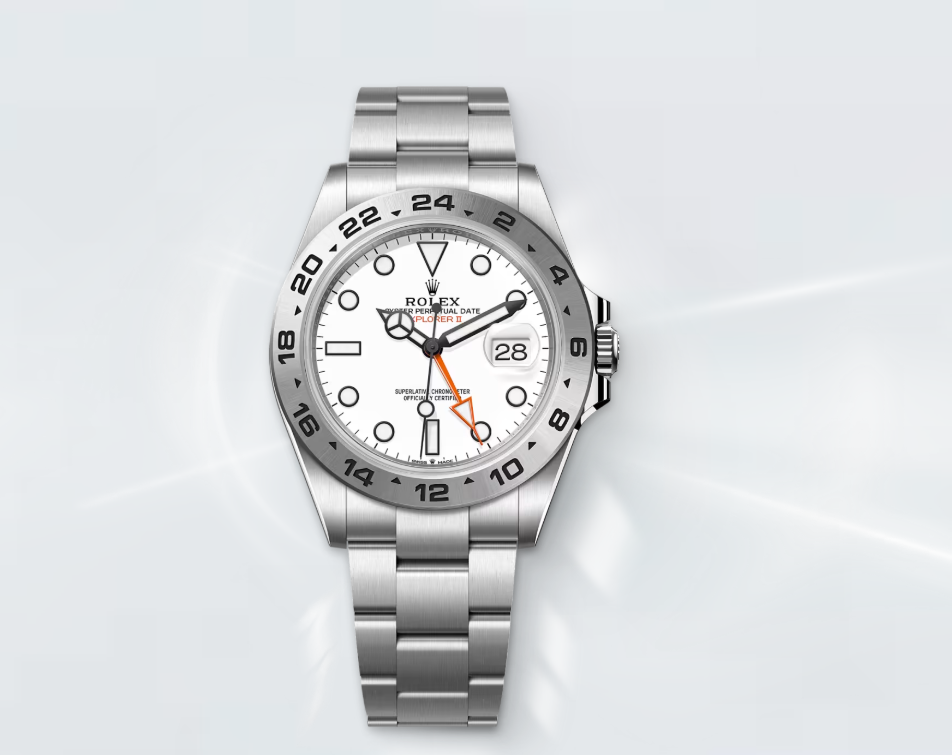
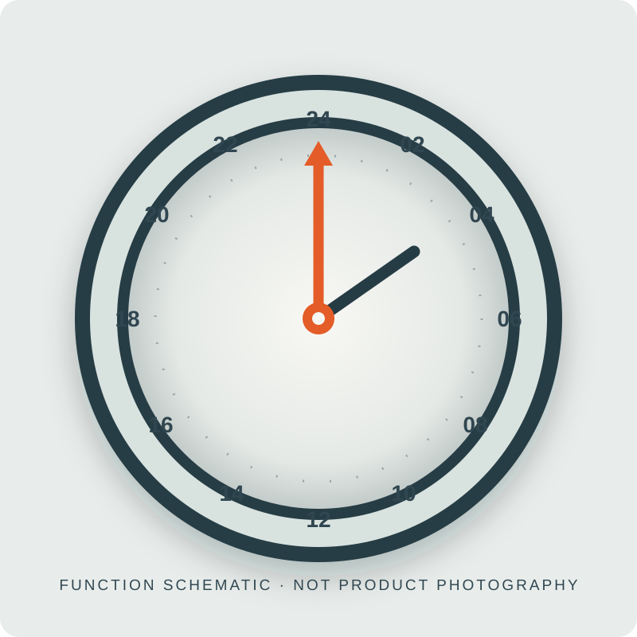

Explorer II
A second time scale for places where daylight gives no reliable cue. Discover the fixed 24-hour bezel, dedicated orange hand and two verified dial references.
User-supplied Explorer II family image · exact model/reference and dial variant not verified.
User-supplied family image · exact model/reference and dial variant not verified.
A fixed scale, read with a dedicated hand.

Rolex describes the Explorer II’s arrow-shaped orange hand as completing one turn in 24 hours. It points to the fixed bezel’s 24-hour graduations, distinguishing daytime from nighttime; the standard hour hand continues to show local time.
The current sampled Oystersteel reference is 226570, offered here only as two Rolex-listed dial descriptions: white and black. Rolex also lists an independently adjustable hour hand and date under calibre 3285.
Choose a dial reference.
Each card opens a matching local detail state and the actual Rolex model page. The illustration explains the function only; it does not depict either variant.
A tool for uncertain daylight.
Rolex dates the Explorer II introduction to 1971 and connects its 24-hour display to exploration in caves and polar regions, where day and night can be difficult to distinguish. The family’s defining details remain functional: an orange hand, a fixed graduated bezel and a date.
Explorer and Explorer II are different Rolex families. Explorer II alone in this sampled pair uses the 24-hour bezel and orange hand. This content is attributed reference material; Venturo does not manufacture, certify, stock or sell Rolex watches.
Reference tools
Explorer II names, reference details, specifications and history are attributed Rolex reference content. No Venturo manufacture, inventory, price or retail offer is represented. Exact-current-reference product photographs are not integrated because no matching image with verified reuse permission was found.